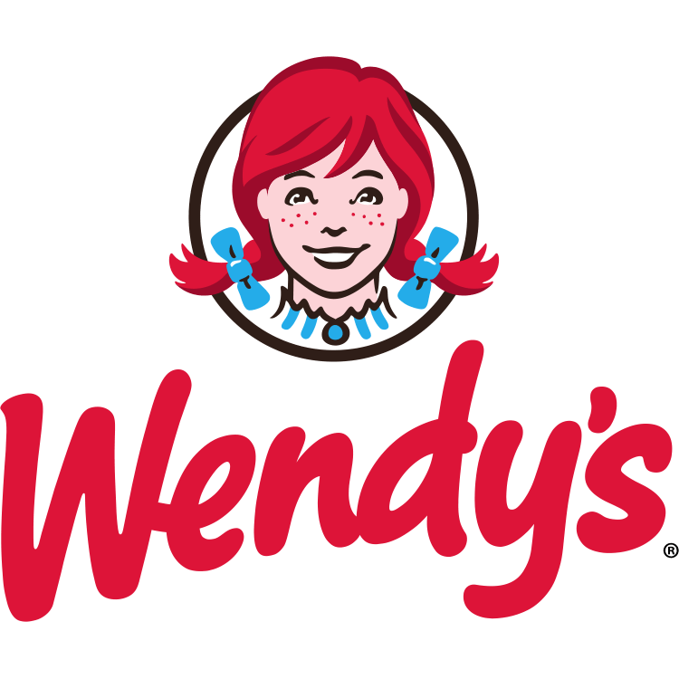

McDonald's
McDonald's is an American fast food company, founded in 1940 as a restaurant operated by Richard and Maurice McDonald, in San Bernardino, California, United States. They rechristened their business as a hamburger stand, and later turned the company into a franchise, with the Golden Arches logo being introduced in 1953 at a location in Phoenix, Arizona. In 1955, Ray Kroc, a businessman, joined the company as a franchise agent and proceeded to purchase the chain from the McDonald brothers. McDonald's had its original headquarters in Oak Brook, Illinois, but moved its global headquarters to Chicago in early 2018
Wendy's
Wendy's is an American international fast food restaurant chain founded by Dave Thomas on November 15, 1969, in Columbus, Ohio. The company moved its headquarters to Dublin, Ohio, on January 29, 2006. As of 2016, Wendy's was the world's third largest hamburger fast food chain with 6,500+ locations, following Burger King and McDonald's. On April 24, 2008, the company announced a merger with Triarc Companies Inc., a publicly traded company and the parent company of Arby's. Despite the new ownership, Wendy's headquarters remained in Dublin. Previously, Wendy's had rejected more than two buyout offers from Triarc.[citation needed] Following the merger, Triarc became known as Wendy's/Arby's Group, and later as The Wendy's Company.
Starbucks
Wendy's is an American international fast food restaurant chain founded by Dave Thomas on November 15, 1969, in Columbus, Ohio. The company moved its headquarters to Dublin, Ohio, on January 29, 2006. As of 2016, Wendy's was the world's third largest hamburger fast food chain with 6,500+ locations, following Burger King and McDonald's. On April 24, 2008, the company announced a merger with Triarc Companies Inc., a publicly traded company and the parent company of Arby's. Despite the new ownership, Wendy's headquarters remained in Dublin. Previously, Wendy's had rejected more than two buyout offers from Triarc.[citation needed] Following the merger, Triarc became known as Wendy's/Arby's Group, and later as The Wendy's Company.
Julius Meinl
Julius Meinl International (German: Julius Meinl AG, Meinl-Gruppe), also known simply as Julius Meinl, is a manufacturer and retailer of coffee, gourmet foods and other grocery products. The company is based in Vienna, Austria. It is named after its founders Julius Meinl I, and Julius Meinl II. Julius Meinl III ceded control of the company to his son in 1987. The retail division of the group, except the high-profile flagship store in downtown Vienna, was sold to Rewe by Julius Meinl V in 1998/1999.
Dunkin' Donuts
Dunkin' Donuts, currently rebranding as Dunkin', is an American multinational coffee company and quick service restaurant. It was founded by William Rosenberg in Quincy, Massachusetts in 1950. The chain was acquired by Baskin-Robbins' holding company Allied Lyons in 1990; its acquisition of the Mister Donut chain and conversion to Dunkin' Donuts facilitated the brand's growth in North America that year.[2] Dunkin' Donuts and Baskin-Robbins have been subsidiaries of Dunkin' Brands, headquartered in Canton, Massachusetts, since 2004. The chain began rebranding as a "beverage-led company", and was renamed Dunkin', in January 2019.